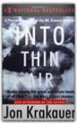

|
The Lost Explorer : Finding Mallory On Mount Everest

On June 8, 1924, George Leigh Mallory and Andrew "Sandy" Irvine were last seen climbing toward the summit of Mount Everest. Clouds soon closed around them, and they vanished into history. Ever since, mountaineers have wondered whether they reached the summit twenty-nine years before Edmund Hillary and Tenzing Norgay. On May 1, 1999, Conrad Anker, one of the world's strongest mountaineers, discovered Mallory's body lying facedown, frozen into the scree and naturally mummified at 27,000 feet on Everest's north face. The condition of the body, as well as the artifacts found with Mallory, including goggles, an altimeter, and a carefully wrapped bundle of personal letters, are important clues in determining his fate. Seventeen days later, Anker free-climbed the Second Step, a 90-foot sheer cliff that is the single hardest obstacle on the north ridge. The first expedition known to have conquered the Second Step, a Chinese team in 1975, had tied a ladder to the cliff, leaving unanswered the question of whether Mallory could have climbed it in 1924. Anker's climb was the first test since Mallory's of the cliff's true difficulty. In treacherous conditions, Anker led teammate Dave Hahn from the Second Step to the summit. Reflecting on the climb, Anker explains why he thinks Mallory and Irvine failed to make the summit, but at the same time, he expresses his awe at Mallory's achievement with the primitive equipment of the time. Stunningly handsome andcharismatic, Mallory charmed everyone who met him during his lifetime and continues to fascinate mountaineers today. He was an able writer, a favorite of the Bloomsbury circle, and a climber of legendary gracefulness. "The Lost Explorer" is the remarkable story of this extraordinarily talented man and of the equally talented modern climber who spearheaded a discovery that may ultimately help solve the mystery of Mallory's disappearance. Into Thin Air: A Personal Account of the Mt. Everest Disaster

Jon Krakauer
National Bestseller A bank of clouds was assembling on the not-so-distant horizon, but journalist-mountaineer Jon Krakauer, standing on the summit of Mt. Everest, saw nothing that "suggested that a murderous storm was bearing down." He was wrong. The storm, which claimed five lives and left countless more—including Krakauer's—in guilt-ridden disarray, would also provide the impetus for Into Thin Air, Krakauer's epic account of the May 1996 disaster. By writing Into Thin Air, Krakauer may have hoped to exorcise some of his own demons and lay to rest some of the painful questions that still surround the event. He takes great pains to provide a balanced picture of the people and events he witnessed and gives due credit to the tireless and dedicated Sherpas. He also avoids blasting easy targets such as Sandy Pittman, the wealthy socialite who brought an espresso maker along on the expedition. Krakauer's highly personal inquiry into the catastrophe provides a great deal of insight into what went wrong. But for Krakauer himself, further interviews and investigations only lead him to the conclusion that his perceived failures were directly responsible for a fellow climber's death. Clearly, Krakauer remains haunted by the disaster, and although he relates a number of incidents in which he acted selflessly and even heroically, he seems unable to view those instances objectively. In the end, despite his evenhanded and even generous assessment of others' actions, he reserves a full measure of vitriol for himself. This updated trade paperback edition of Into Thin Air includes an extensive new postscript that sheds fascinating light on the acrimonious debate that flared between Krakauer and Everest guide Anatoli Boukreev in the wake of the tragedy. "I have no doubt that Boukreev's intentions were good on summit day," writes Krakauer in the postscript, dated August 1999. "What disturbs me, though, was Boukreev's refusal to acknowledge the possibility that he made even a single poor decision. Never did he indicate that perhaps it wasn't the best choice to climb without gas or go down ahead of his clients." As usual, Krakauer supports his points with dogged research and a good dose of humility. But rather than continue the heated discourse that has raged since Into Thin Air's denouncement of guide Boukreev, Krakauer's tone is conciliatory; he points most of his criticism at G. Weston De Walt, who coauthored The Climb, Boukreev's version of events. And in a touching conclusion, Krakauer recounts his last conversation with the late Boukreev, in which the two weathered climbers agreed to disagree about certain points. Krakauer had great hopes to patch things up with Boukreev, but the Russian later died in an avalanche on another Himalayan peak, Annapurna I. In 1999, Krakauer received an Academy Award in Literature from the American Academy of Arts and Letters—a prestigious prize intended "to honor writers of exceptional accomplishment." According to the Academy's citation, "Krakauer combines the tenacity and courage of the finest tradition of investigative journalism with the stylish subtlety and profound insight of the born writer. His account of an ascent of Mount Everest has led to a general reevaluation of climbing and of the commercialization of what was once a romantic, solitary sport; while his account of the life and death of Christopher McCandless, who died of starvation after challenging the Alaskan wilderness, delves even more deeply and disturbingly into the fascination of nature and the devastating effects of its lure on a young and curious mind." Under the Banner of Heaven: A Story of Violent Faith

At the core of Krakauer’s book are brothers Ron and Dan Lafferty, who insist they received a commandment from God to kill a blameless woman and her baby girl. Beginning with a meticulously researched account of this appalling double murder, Krakauer constructs a multi-layered, bone-chilling narrative of messianic delusion, polygamy, savage violence, and unyielding faith. Along the way he uncovers a shadowy offshoot of America’s fastest growing religion, and raises provocative questions about the nature of religious belief. Escape Routes: Further Adventure Writings of David Roberts

Deborah and Mountain of My Fear

Escape from Lucania : An Epic Story of Survival

Classmates and fellow members of the Harvard Mountaineering Club, Brad Washburn and Bob Bates were two talented young men — handsome, intelligent, and filled with a zest for exploring. Both were ambitious climbers, part of a small group whose first ascents in the great mountain ranges during the 1930s and 1940s changed the face of American mountaineering. Setting their sights on summitting Lucania in the summer of 1937, Washburn and Bates put together a team of four climbers for the expedition. But when Bates and Washburn flew to the Walsh Glacier at the foot of Lucania, they discovered that freakish weather conditions had turned the ice to slush. Their pilot was barely able to take off again alone, and there was no question of returning with the other two climbers or more supplies. Washburn and Bates found themselves marooned on the glacier, more than a hundred miles from help, in forbidding and desolate territory. Eschewing a trek out to the nearest mining town — eighty miles away by air — they decided to press ahead with their expedition. "Escape from Lucania" recounts Washburn and Bates's determined drive toward Lucania's 17,150-foot summit under constant threat ofavalanches, blinding snowstorms, and hidden crevasses. Against awesome odds they became the first to set foot on Lucania's peak, not realizing that their greatest challenge still lay beyond. Nearly a month after being stranded on the glacier and with their supplies running dangerously low, they would have to navigate their way out through uncharted Yukon territory, racing against time as the summer warmth caused rivers to swell and flood to unfordable depths. But even as their situation grew more and more desperate, they refused to give up. "Escape from Lucania" tells this amazing story in thrilling and vivid detail, from the climbers' exultation at reaching the summit to their darkest moments confronting seemingly insurmountable obstacles. It is a tale of awesome adventure and harrowing danger. But above all it is the story of two men of extraordinary spirit, inspiring comradeship, and great courage. Today Washburn and Bates, now in their nineties, are legends in climbing circles. Bates co-led 1938 and 1953 expeditions to K2, the world's second-highest mountain. Washburn, whose record of Alaskan first ascents is unmatched, became founding director of Boston's Museum of Science and is one of the premier mountain photographers in the world. Some of his remarkable images from the 1937 Lucania expedition are included in this book. On the Ridge Between Life and Death: A Climbing Life Reexamined

At age eighteen, Roberts witnessed the death of his first climbing partner in Boulder, Colorado. A few years later, he was the first on the scene of a fatal accident on Mount Washington, New Hampshire. Months afterward, while pioneering a new route in Alaska with the Harvard Mountaineering Club, Roberts watched as his climbing partner and friend fell wordlessly 4,000 feet to a glacier below. Despite these tragedies, Roberts insists that the greatest pleasures in his life have come in the mountains. Several of his challenging routes in Alaska have never been climbed again in the nearly forty years since those first ascents. Roberts continues to climb today, and like all climbers, he still grapples with the cost-benefit calculus of his sport. In a well-known essay that he wrote twenty-five years ago, "Moments of Doubt," Roberts insisted that the benefits of climbing were "worth it." More recently, however, he has gone back to interview relatives and friends of some of his deceased climbing partners. He discovered that even decades later, the wounds had failed to heal, the terrible losses were still acutely felt. And so in this book he comes to a different conclusion about climbing, one that is sure to stir controversy in mountaineering circles and among adventurers generally. Anyone who has ever wondered why mountaineers take the risks that they do will be moved and enlightened by On the Ridge Between Life and Death, as will anyone who appreciates vivid, dramatic storytelling and an unflinchingly honest self-examination of a lifetime spent pursuing a dangerous pastime. No Shortcuts to the Top: Climbing the World's 14 Highest Peaks

For eighteen years Ed Viesturs pursued climbing’s holy grail: to stand atop the world’s fourteen 8,000-meter peaks, without the aid of bottled oxygen. But No Shortcuts to the Top is as much about the man who would become the first American to achieve that goal as it is about his stunning quest. As Viesturs recounts the stories of his most harrowing climbs, he reveals a man torn between the flat, safe world he and his loved ones share and the majestic and deadly places where only he can go. A preternaturally cautious climber who once turned back 300 feet from the top of Everest but who would not shrink from a peak (Annapurna) known to claim the life of one climber for every two who reached its summit, Viesturs lives by an unyielding motto, “Reaching the summit is optional. Getting down is mandatory.” It is with this philosophy that he vividly describes fatal errors in judgment made by his fellow climbers as well as a few of his own close calls and gallant rescues. And, for the first time, he details his own pivotal and heroic role in the 1996 Everest disaster made famous in Jon Krakauer's Into Thin Air. In addition to the raw excitement of Viesturs’s odyssey, No Shortcuts to the Top is leavened with many funny moments revealing the camaraderie between climbers. It is more than the first full account of one of the staggering accomplishments of our time; it is a portrait of a brave and devoted family man and his beliefs that shaped this most perilous and magnificent pursuit. |


My Library
Collection Total:
1320 Items
1320 Items
Last Updated:
Apr 14, 2013
Apr 14, 2013
 Made with Delicious Library
Made with Delicious Library